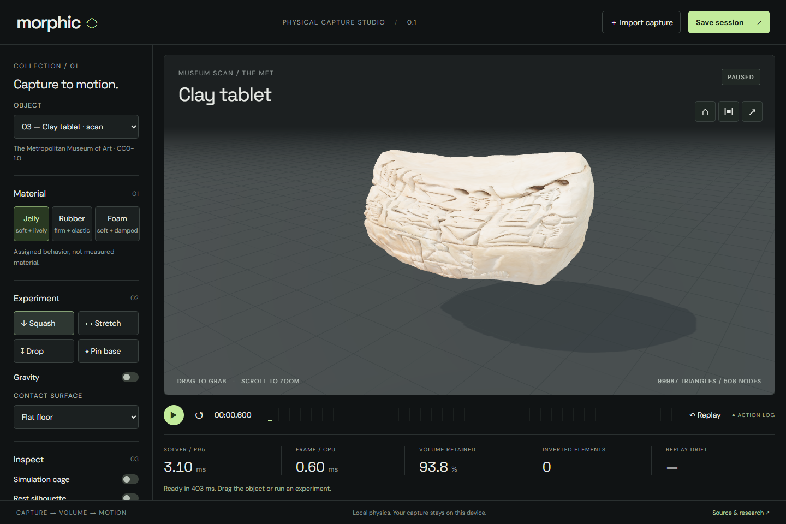

Capturing response.
An object should carry more than its shape. Can a fitted response survive a different interaction?
Pull a known object sideways, observe its motion, then ask the fitted model to predict a larger pull in another direction. This first experiment makes that question reproducible inside Morphic.
Controlled synthetic experiment. The orange reference comes from a hidden XPBD model, with noise added to sparse observations for fitting. It is not a recording of a real object. The experiment verifies identification within this model family; this experiment alone does not validate a real object.
The black marker shows the prescribed handle and disappears on release. Surface bands are fixed in rest space; they are visual markers, not a recovered material map.
Point error (mm): preset, uniform fit, regional fit. The dashed cursor follows the shared clock. Deliberate edits are excluded from accuracy scoring.
All three panels receive the same action and share one clock. The fit never receives the held-out reference motion.
Fit the motion. Test the response.
The known specimen is pulled for 0.55 seconds, then released. The fitting loss uses sparse points away from the pinned base and driven node. The separate test uses a larger pull along another axis. Supplying the test action is allowed; supplying its resulting motion to the predictor is not.
We first fit one edge compliance and a damping rate. We then allow the lower and upper regions to have different edge compliances. Geometry, density, volume compliance, timestep, and iteration count stay fixed. This isolates the contribution of spatial variation.
Loading recorded measurements…
Every attempted case.
Errors below are Euclidean 3D point RMSE on the held-out interaction, in millimetres. Three independent noise seeds are reported for both material configurations. Each coordinate receives bounded noise with a standard deviation of 0.5 mm. The corresponding 3D noise floor is approximately 0.87 mm.
| Hidden material | Noise seed | Preset | Uniform fit | Regional fit |
|---|
Second held-out action: change the attachment point
The second test pulls a lower point from the opposite side of the specimen. It tests changed loading support as well as direction. This motion is also withheld from fitting.
| Hidden material | Noise seed | Preset | Uniform fit | Regional fit |
|---|
Raw evidence and reproduction
Download observations, fitted asset, trajectories, and full
results. The Node command npm run behavior:study regenerates
this evidence from fixed seeds.
npm run behavior:fit -- dataset.json output.json fits a
supplied observation dataset. Source hashes accompany the experiment
in the repository.
These are independent Morphic implementations of bounded pattern search, regional XPBD response fields, a train/test observation contract, and portable deployment checks. No upstream experiment or timing is reported as a Morphic result.
More parameters need a reason.
A uniform specimen is a negative control: two regions should add little when one response already explains the data. The heterogeneous case asks whether that extra freedom improves a different action, rather than only the fit.
Editing the upper region reruns the same solver with a changed compliance. It is a hypothetical intervention, not a newly observed property. The exported asset records this provenance. Increasing discrete stiffness does not identify a material's Young's modulus.
The model has boundaries.
The physical asset binds its response to the exact rest geometry, edge and tetrahedron topology, density, timestep, and solver iterations. Loading it with a different configuration fails explicitly. Fitting and browser playback execute the same JavaScript solver; an exported action session recomputes motion rather than storing an animation.
Known geometry is an intentional starting point. The specimen uses metre coordinates, a prescribed density of 100 kg/m³, zero gravity, a pinned base, and Morphic's compliant positional handle. These are controlled assumptions, not measured properties. Bulk response is fixed, contact is untested here, and finite solver iterations contribute numerical damping.
There is no physical validation in a same-solver synthetic test. Real observations can disagree because of scale, loading, tracking, hidden support, hysteresis, or a wrong model. A better optimizer cannot resolve those ambiguities by itself.
Why this research combination?
PhysTwin motivates fitting observed motion and testing novel interactions. Morphic adopts that experimental separation without reproducing its reconstruction or differentiable spring-mass pipeline.
PhysReal motivates global-to-local fitting. Here that becomes two rest-space regions, without MPM or neural constitutive residuals.
FreeForm and Simplicits are candidates for compact simulation. They do not supply observation fitting automatically. Switching to their continuum dynamics would require a new calibration and a matched approximation study. Morphic's current tetrahedral XPBD solver is neither method.
PhysGaussian provides an appearance route when Gaussian capture earns its added complexity. There is no measured appearance advantage for it in this experiment, so the existing textured-mesh path remains.
The captured surface stays useful.

The existing studio retains textured GLBs, GPU deformation, mouse interaction, export, and deterministic replay. This museum scan demonstrates retained appearance under assigned motion. Its behavior is fictional; the new synthetic fit is not transferred onto it.
Open the original capture studio. A real behavior-capture result must connect that appearance to measured motion of the same object and test it under a separate action.
The next decisive experiment.
Use a compliant object with measured dimensions and mass, known supports, tracked surface points, and a measured or prescribed actuator path. Fit one trial. Freeze the model. Predict a second trial before reading its motion. Compare against the preset and uniform fit, publish synchronized recordings, and retain failures.
PokeFlex is a useful candidate because it pairs deformation with interaction information. Its data portal requires registration. This release does not claim to have evaluated that dataset.